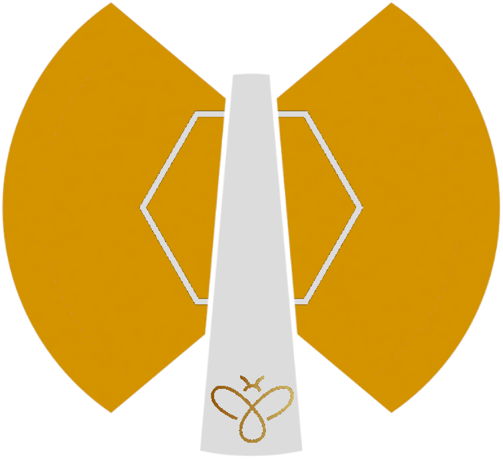

The Turkish interface covers the fixed labels; messages the app writes while it runs (toasts, panel rows, log lines) stay in English. The 3D field colours change at the next start of the sim.
Pen: press and drag to draw a path.
Driving the robot: W S forward and back, A D strafe, Q E rotate, J intake, K idle, L shoot, H shoot on the move. Shortcuts do nothing while you type in a box.
Physics simulation and analysis for FRC robot code. Version .
Runs the robot's own code in the loop with a deterministic physics engine, a rules-aware REBUILT field, scripted runs and calibration.
Built with Rapier (Apache-2.0), three.js (MIT) and uPlot (MIT). The BALTA name, wordmark and emblem belong to BALTA Robotics.
 Crucible
Crucible